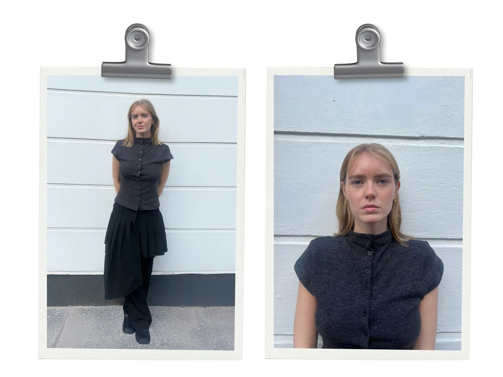

Om mig
Lua Skov Rudkjøbing
Jeg har en stor interesse for design, æstetik og visuel formidling og motiveres af at skabe løsninger, der både er funktionelle og visuelt engagerende. Jeg elsker at arbejde med farver, typografi og komposition og ser grafisk design og visuel kommunikation som stærke værktøjer til at formidle idéer, vække følelser og engagere målgrupper.

Uddannelsesbaggrund
Multimediedesign, Københavns Erhvervsakademi (2024–)
I gang med at opbygge en praksisnær forståelse for digitalt design og udvikling med fokus på webdesign, visuel kommunikation og brugeroplevelse.
Grundforløb 2 – Mediegrafiker, NEXT (2024)
Styrkede kompetencer inden for idéudvikling, design og brug af designprogrammer med fokus på visuel kommunikation og kreative processer.
Designteknolog – Marketing og Kommunikationsdesign, Københavns Erhvervsakademi (2023–2024)
Opnåede grundlæggende viden om marketing, SOME-strategier og projektarbejde med fokus på analyse og indholdsudvikling. Valgte at stoppe uddannelsen for at fokusere mere målrettet på design.
Erhvervserfaring
Tjener (2017–2020)
Erfaring med kundeservice, kommunikation og teamwork i et travlt miljø samt forståelse for målgrupper og forbrugeradfærd.
Pædagogmedhjælper i vuggestue (2020–2024)
Udviklet kompetencer inden for kreativ formidling, målgruppeforståelse og arbejde med digitale og analoge materialer med fokus på visuel kommunikation.
Frivillig ungerådgiver – headspace (2024-2025)
Som frivillig rådgiver har jeg opnået erfaring med aktiv lytning, samtaleteknik og fortrolig kommunikation. Rollen har styrket min evne til at møde unge i øjenhøjde samt min forståelse for forskellige livssituationer og behov.
Hvad jeg har fået ud af 1. semester på Multimediedesign
På 1. semester har jeg opnået en grundlæggende forståelse for samspillet mellem research, design, brugeroplevelse og teknisk implementering. Jeg har arbejdet med visuel kommunikation, webdesign og UX/UI gennem HTML, CSS og JavaScript samt prototyping og test i Figma.
Derudover har jeg opnået erfaring med interaktive brugergrænseflader, billed- og videoproduktion, frontend-teknologier og samarbejde i gruppeprojekter med brug af GitHub. Samlet set har semesteret styrket mine kompetencer inden for digitalt design, formidling og helhedsorienteret problemløsning.
Kontakt mig
Har du spørgsmål eller lyst til at komme i kontakt med mig, er du velkommen til at skrive her.